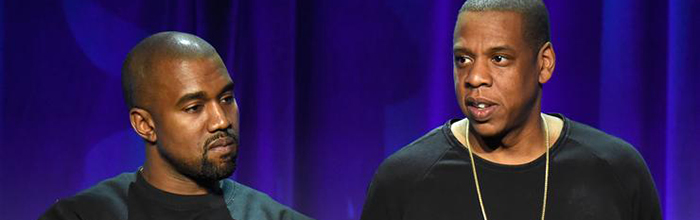
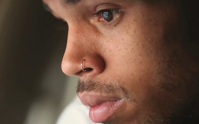
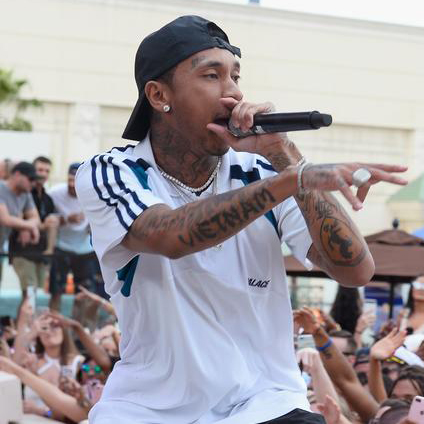
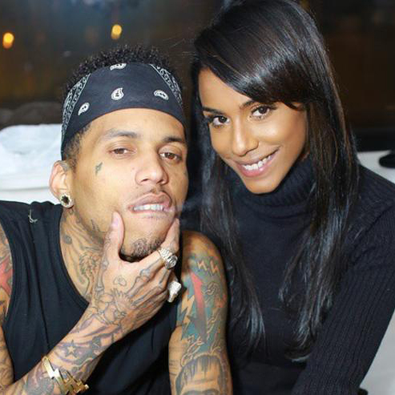
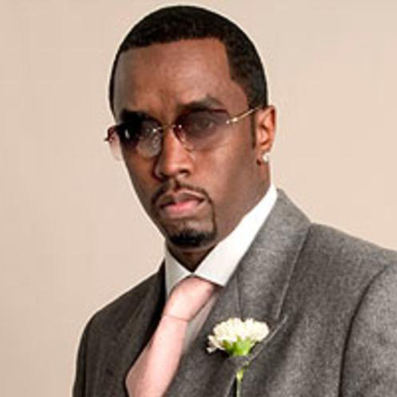
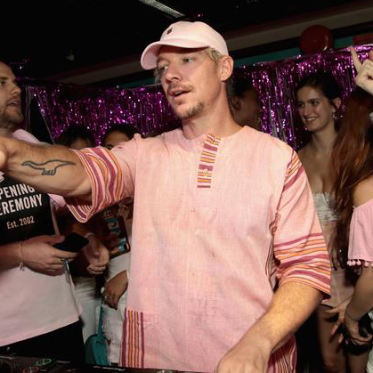

HOT NEWS HIP HOP
The #1 source for hip-hop songs, mixtapes, videos, news

KANYE WEST & JAY-Z REPORTEDLY WORKING TOWARDS RECONCILIATION
Kanye has asked for a "face-to-face" with Hov, according to sources, September 9, 2017
Kanye West has reached out to Jay-Z to work out their recent issues, according to a report from TMZ. A source "close to the situation" has suggested that West has requested a "face-to-face" conversation with his longtime friend and collaborator.
This follows a public feud the two artists have been involved in since Kanye spoke candidly about their strained relationship at a show on the Saint Pablo tour last October. "Don't call me, after the robbery, and say 'how you feelin?' You
wanna know how I'm feelin? Come by the house. Bring the kids by the house," he said. He also directly addressed Beyonce at a November performance: "I was hurt, I went down seven years on behalf of [you]... Beyoncé, I was hurt because I heard
that you said you wouldn’t perform unless you won Video of the Year over me and over “Hotline Bling.” Shortly after the comments, Kanye was hospitalized.
LIL WAYNE'S NEXT ALBUM: 5 PRODUCERS WE WANT TO SEE
It's time for Lil Wayne to start making a few calls, September 8, 2017
Earlier this week, an alarming report surfaced that the legendary Lil Wayne had suffered several seizures, and had to be hospitalized as a result. Weezy fans immediately feared the worst, as the rapper has epilepsy, and a severe enough seizure
can be devastating to one’s physical and mental health. Luckily for everyone involved, Wayne bounced back, seemingly stronger than ever. After his manager announced that his work ethic could never be stifled, pictures hit the internet revealing
that Wayne was already back in the studio, working on new music with Damian Lillard and Scott Storch.

ARTIST OF THE YEAR: CHRIS BROWN
Love him or hate him, Chris Brown is widely considered to be one of, if not the most talented contemporary male R&B artist currently working.
Popular Posts
-

Tyga Teases Upcoming Singing Album
September 6, 2017
-

Kid Ink Is Engaged
July 1, 2017
-

Diddy Hospitalized For Migraine
February 13, 2012
-

Diplo Says He Has New EP
August 6, 2017
Tags
News
Top 100
Songs
Mixtapes
Videos
Sports
Entertainment
Artists